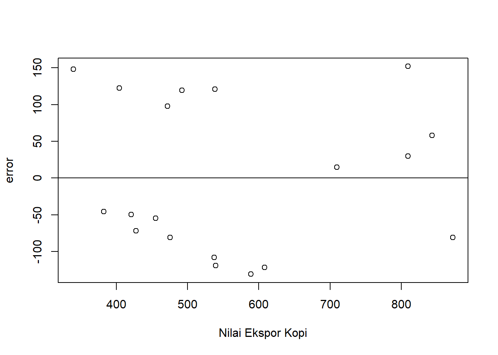
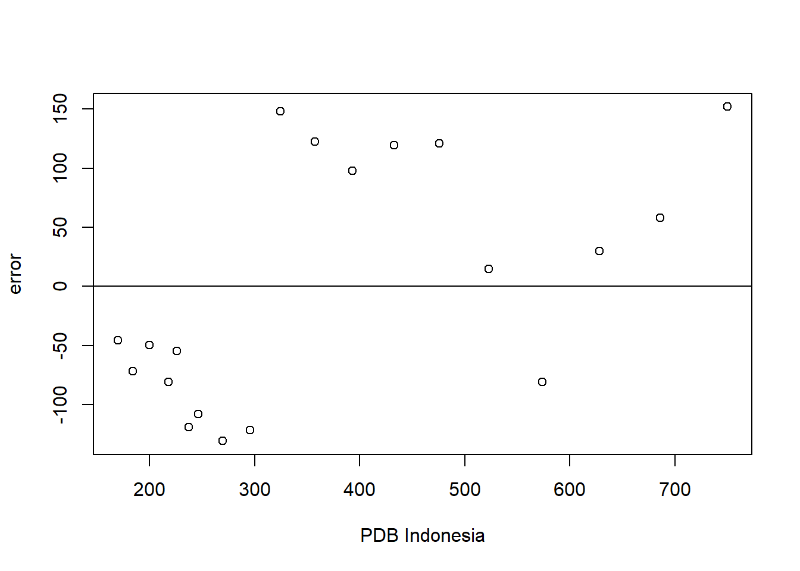

library(tidyverse)
library(readxl)ANALISIS DAYA SAING EKSPOR KOPI INDONESIA SERTA PENGARUHNYA TERHADAP PERTUMBUHAN PDB INDONESIA
Metode Penelitian Politeknik APP Jakarta

1 Pendahuluan
1.1 Latar belakang
Indonesia merupakan salah satu negara pemasok ekspor migas dan nonmigas di pasar dunia. Tidak kurang dari 140 negara yang menjadi tujuan ekspor Indonesia (Ramadhani, 2018). Menurut data yang di peroleh dari statistik yang dikeluarkan oleh Biro Pusat Statistik (BPS), hampir 5.000 macam produk dari Indonesia telah memasuki pasar-pasar negara tersebut, salah satunya yaitu ekspor kopi.
Kopi merupakan salah satu komoditas unggulan dalam subsektor perkebunan di Indonesia karena memiliki peluang pasar yang baik di dalam negeri maupun luar negeri. Sebagian besar produksi kopi di Indonesia merupakan komoditas perkebunan yang dijual ke pasar dunia (Fernanda dan Rini, 2018). Luas areal kopi di Indonesia menempati urutan kedua terbesar setelah Brazil. Luas areal kopi di Indonesia pada tahun 2011 diperkirakan sebesar 1.254.921 hektar, dimana umumnya diusahakan oleh perkebunan rakyat 95.94%,perkebunan negara 1.77%, dan perkebunan swasta 2.29%. Dtinjau dari produksi, Indonesia menempati urutan ketiga setelah Brazil dan Vietanam. Keadaan ini terjadi karena produktivitas kopi Indonesia jauh lebih rendah dibandingkan dengan Vietnam. Rendahnya produktivitas kopi Indonesia karena sebagian besar diusahatan oleh perkebunan rakyat dengan keterbatasan modal dan akses terhadap teknologi (Hanani dkk, 2012).
Menurut International Coffee Organization (ICO) konsumsi kopi meningkat dari tahun ke tahun sehingga peningkatan produksi kopi di Indonesia memiliki peluang besar untuk mengekspor kopi ke negara negara pengonsumsi kopi utama dunia seperti Uni Eropa, Amerika Serikat, dan Jepang. Tahun 2010 negara pengeskpor kopi terbesar ditempai oleh Brazil dengan pangsa pasar ekpor 27.22%, diikuti Vietnam 18.51%, sedangkan Indonesia menempati urutan ketiga dengan pangsa 6.58%, dan Columbia 6.23 %. Usaha peningkatan ekspor kopi Indonesia di pasar internasional perlu dilakukan tidak hanya memperhatikan aspek produksi namun juga perlu memperhatikan tingkat persaingan ekspor dengan negara pesaing utamanya (Fernanda dan Rini, 2018).
Pada tahun 2014 jumlah ekspor kopi Indonesiaa mencapai 385 ton dan akan selalu meningkat pada setiap tahunnya. Jumlah tersebut merupakan jumlah biji kopi yang telah di ekspor ke beberapa negara besar di dunia, salah satunya yaitu negara Amerika, Jerman dan negara-negara Eropa. Pada tahun 2014 Indonesia menjadi salah satu eksportir kopi terbesar di dunia (Ramadhani, 2018).
Dari uraian tersebut dirasa perlu diadakan penelitian lebih lanjut terkait dengan analisis daya saing kopi Indonesia dan pengaruhnya terhadap PDB indonesia
1.2 Ruang lingkup
Ruang lingkup bahasan permasalahan dari laporan ini adalah memakai beberapa variabel, total ekspor kopi, PDB Indonesia, dan produktivitas dari kopi sendiri. Rentang waktu (Time Series) yang peneliti gunakan untuk penelitian adalah dari tahun 2004-2022. Batasan masalah yang dipakai peneliti adalah untuk mengetahui daya saing kopi Indonesia dan pengaruhnya terhadap PDB indonesia.
1.3 Rumusan masalah
Berdasarkan pemaparan pada latar belakang, permasalahan yang diidentifikasi adalah sebagai berikut:
Bagaimana kondisi trend terkini/trend perkembangan ekspor komoditas kopi Indonesia di Pasar Inrternasional?
Seberapa besar pengaruh ekspor kopi Indonesia terhadap nilai PDB Indonesia?
Pengaruh produktivitas kopi terhadap total nilai ekspor dan nilai PDB Indonesia?
1.4 Tujuan dan manfaat penelitian
Tujuan dilakukannya penelitian ini adalah sebagai berikut: 1. Untuk mengetahui trend terkini/trend perkembangan ekspor komoditas kopi Indonesia di Pasar Internasional.
- Untuk mengetahui pengaruh ekspor kopi Indonesia terhadap nilai PDB Indonesia.
Untuk mengetahui pengaruh produktivitas kopi terhadap total nilai ekspor dan nilai PDB Indonesia.
Manfaat dilakukannya penelitian ini adalah sebagai berikut:
Aspek ilmiah: Hasil penelitian diharapkan dapat menjadi salah satu referensi dalam memberikan informasi ilmiah yang menunjang ilmu pengetahuan dalam bidang kajian perdagangan internasional kondisi terkini ekspor kopi Indonesia, ketersediaan produk kopi, dan pengaruhnya terhadap nilai PDB Indonesia.
Aspek praktis: Hasil penelitian diharapkan dapat menjadi referensi dalam merencanakan strategi/upaya untuk mengoptimalkan kegiatan ekspor komoditas kopi Indonesia di Pasar Internasional.
1.5 Package
Packages yang digunakan sebagai penunjang regresi dalam penelitian ini antara lain sebagai berikut:
2 Studi pustaka
1 teori permintaan dan penawaran ekspor
Perdagangan Internasional adalah perdagangan yang dilakukan oleh penduduk suatu negara dengan penduduk negara lain atas dasar kesepakatan bersama. Penduduk yang dimaksud dapat berupa antar perorangan (individu dengan individu), antara individu dengan pemerintah suatu negara atau pemerintah suatu negara dengan pemerintah negara lain. Di banyak negara, perdagangan internasional menjadi salah satu faktor utama untuk meningkatkan GDP. Adam Smith mengajukan teori perdagangan internasional yang dikenal dengan teori keunggulan absolut (theory of absolute advantage). Ia berpendapat bahwa jika suatu negara menghendaki adanya persaingan, perdagangan bebas dan spesialisasi di dalam negeri, maka hal yang sama juga dikehendaki dalam hubungan antar bangsa. Karena hal itu ia mengusulkan bahwa sebaiknya semua negara lebih baik berspesialisasi dalam komoditi komoditi di mana ia mempunyai keunggulan yang absolut dan mengimpor saja komoditi komoditinya lainnya (Fernanda dan Rini, 2018).
Secara teoritis ekspor suatu barang dipengaruhi oleh suatu penawaran (supply) dan permintaan (demand). Dalam International Economics: Theory and Policy disebutkan bahwa faktor-faktor yang mempengaruhi ekspor dapat dilihat dari sisi permintaan dan sisi penawaran. Dari sisi permintaan, ekspor dipengaruhi oleh harga ekspor, nilai tukar riil, pendapatan dunia dan kebijakan devaluasi (Krugman P.R. dan Obstfeld, M. 1999). Sedangkan dari sisi penawaran, ekspor dipengaruhi oleh harga ekspor, harga domestik, nilai tukar riil, kapasitas produksi yang biasa dilakukan melalui investasi, impor bahan baku dan kebijakan deregulas (Fernanda dan Rini, 2018).
Teori permintaan menerangkan tentang ciri hubungan antara jumlah permintaan dan harga (Sadono S, 2005). Menurut Gregory Mankiw (2012) kuantitas permintaan menurun ketika harganya meningkat dan kuantitas permintaan meningkat ketika harganya menurun sehingga dikatakan bahwa kuantitas yang diminta berhubungan secara negatif dengan harga. Hubungan antara harga dan kuantitas yang diminta seperti ini berlaku untuk sebagian besar barang dalam perekonomian dan dalam faktanya begitu nyata sehingga para ekonom menamakannya hukum permintaan (law of demand) dengan menganggap hal ainnya sama (ceteris paribus) (Fernanda dan Rini, 2018).
- kopi Indonesia
Kopi merupakan komoditas ekspor yang cukup penting bagi perekonomian Indonesia karena perolehan devisa dari kopi menduduki urutan keempat setelah kayu, karet, dan kelapa sawit. Kopi memiliki banyak jenis, jenis yang diminati orang adalah jenis arabika dan robusta dan jenis kopi lainnya seperti liberika dan ekselsa (Lubis dkk, 2017).
Berdasarkan data statistik Gabungan Eksportir Kopi Indonesia (GAEKI) tahun 2018, kopi adalah salah satu komoditas perkebunan yang berpotensi terutama jika dilihat dari proporsi luas lahan tanaman kopi, dengan luas estimasi Perkebunan Rakyat (PR) sebesar 1.210.166 Ha, Perkebunan Negara (PBN) 23.525 Ha,dan untuk Perkebunan Swasta (PBS) 25.445 Ha. Kopi tergolong kelompok tanaman yang membutuhkan unsur hara dalam jumlah banyak yaitu umur 1 tahun unsur Nitrogen membutuhkan 20 g urea /pohon , fosfor 25 g SP36 /pohon, Kalsium 15 g KCL /pohon (Puslitkoka, 2006).
Berdasarkan hasil penelitian dilaporkan bahwa setiap hektar tanaman kopi (Arabika dan Robusta) mengangkut unsur makro N, P, K, Mg dan Ca dari tanah,. Unsur hara yang diserap tersebut sebagian untuk pembentukan jaringan baru tanaman, dan sebagian lagi hilang terangkut hasil panen atau hasil pemangkasan (Malavolta, 1990).
3 Metode penelitian
3.1 Data
Berikut adalah data yang digunakan sebagai objek penelitian, data dibawah ini merupakan data nilai ekspor kopi dan nilai PDB Indonesia dengan satuan USD.
| Tahun | Ekspor Kopi(X) | Nilai PDB Indonesia (Y) |
|---|---|---|
| 2004 | 382,7 | 169,8 |
| 2005 | 427,6 | 184,1 |
| 2006 | 420,9 | 200,1 |
| 2007 | 475,4 | 217,8 |
| 2008 | 539,6 | 237,2 |
| 2009 | 455,3 | 225,7 |
| 2010 | 537,5 | 246,3 |
| 2011 | 588,9 | 269,7 |
| 2012 | 608 | 295,8 |
| 2013 | 339,9 | 324,8 |
| 2014 | 404,6 | 357,3 |
| 2015 | 471,8 | 393,3 |
| 2016 | 492 | 432,9 |
| 2017 | 538,6 | 476,1 |
| 2018 | 709,2 | 523 |
| 2019 | 872 | 573,6 |
| 2020 | 809,2 | 628 |
| 2021 | 843 | 686,3 |
| 2024 | 809,2 | 750 |
dat<-read_excel('data_arifin.xlsx')
View(dat)
#X
reg1<-lm(Y~X,data=dat)
dat$m<-resid(reg1)
plot(dat$X,dat$m,xlab="Nilai Ekspor Kopi",ylab="error")
abline(h=0)
Plot pengaruh error terhadap nilai ekspor
{kind=link}
#Y
dat$m<-resid(reg1)
plot(dat$Y,dat$m,xlab="PDB Indonesia",ylab="error")
abline(h=0)
Plot pengaruh error terhadap PDB Indonesia
{kind=link}
Dalam kode tersebut merupakan data terkait dari pengelolaan data regresi. Untuk data total ekspor dan produktivitas kopi didapatkan dari BPS, untuk data nilai PDB Indonesia didapatkan dari WDI.
3.2 Metode analisis
Penelitian ini dipilih karena kopi menjadi komoditas yang strategis di Indonesia dan menurut peneliti, periode tersebut menggambarkan kondisi terkini dari ekspor kopi. Terdapat 3 variabel yang akan digunakan dalam penelitian ini, total nilai ekspor kopi, PDB Indonesia, dan otal produktivitas kopi.
Jenis data dalam penelitian ini adalah data kuantitatif dalam bentuk time series. Data yang diperlukan dalam penelitian ini adalah data total nilai ekspor kopi, PDB Indonesia, dan total produktivitas kopi. Data diambil dalam kurun waktu 18 tahun dari 2004-2022.
\[ y_{t}=\beta_0 + \beta_1 x_t+\mu_t \] di mana \(y_t\) adalah hwy dan \(x_t\) adalah cty.
Metode analisis yang digunakan dalam penelitian ini adalah teknik kuantitatif dan penjabaran deskriptif, melalui tahapan sebagai berikut:
- Data Reduction (Data Reduksi)
Mereduksi data berarti merangkum, memilih hal-hal yang pokok, memfokuskan pada hal-hal yang penting.
- Data Display (Penyajian Data)
Penyajian data dilakukan dengan mengelompokkan data sesuai dengan sub bab-nya masing-masing. Dalam penulisan kualitatif, penyajian data dilakukan dengan bentuk uraia n singkat, bagan, hubungan antar kategori dan sejenisnya, tetapi yang paling seringdigunakan adalah teks yang bersifat naratif (Sugiyono, 2005).
- Conclusion Drawing/Verification (Simpulan/Verifikasi)
Langkah yang terakhir dilakukan dalam analisis data kualitatif adalah penarikan kesimpulan dan verifikasi dari hasil yang telah didapatkan.
4 Pembahasan
4.1 Pembahasan masalah
| Variabel | Coefficient | Std.Error | t-value | Prob (.) |
|---|---|---|---|---|
| Intercept | -128.0482 | 86.9837 | -1.472 | 0.159 |
| X | 0.8974 | 0.1481 | 6.059 | 1.28e-05 *** |
| R squared | 0.6835 | |||
| Adjusted R-squared | 0.6649 | |||
| F-Statistic | 36.71 | |||
| p-value | 1.277e-05 |
Berdasarkan hasil penelitian yang dilakukan secara study literature. Penelitian yang dilakukan oleh (Fernanda dan Rini, 2018) dengan metode analisis trend menyatakan bahwa periode waktu mempengaruhi ekspor kopi. Analisis regresi bertujuan untuk mengetahui pengaruh variabel independent terhadap variabel dependen. Pada penelitian ini akan dianalisis pengaruh waktu (tahun) terhadap ekspor kopi.
Berdasarkan literatur yang didapatkan (Fernanda dan Rini, 2018) melaporkan dalam penelitiannya bahwa perkembangan nilai ekspor Indonesia dari periode tahun 1990-2017, sebesar 292196 ton. Sementara peramalan yang dilakukan untuk melihat nilai ekspor kopi Indonesia pada tahun 2020 sebesar 7205 ton. Sedangkan koefisien regresi Negara Indonesia diperoleh sebesar 39,983 menunjukkan ekspor kopi akan meningkat sebesar 39,983 setiap tahunnya.
Nilai koefisien regresi 39,983 ekspor kopi akan meningkat sebesar 39,983 satuan setiap kenaikan satu-satuan dari waktu. Ekspor kopi Indonesia terdiri dari beberapa jenis yaitu Green beens, Instan Coffee, Ekstract, Essence, Concentratte dan Roasted Coffee. Beberapa jenis kopi yang diekspor oleh Indonesia di pasar dunia serta besarnya ekspor dari masing masing jenis kopi. Jenis kopi yang terbanyak diekspor adalah dalam bentuk Green Beens, sedangkan jenis Roasted Coffee adalah yang terkecil diekspor oleh Indonesia. Perkembangan eskpor kopi pada umumnya fluktuatif namun cenderung meningkatkan dari tahun ke tahun.
Besarnya komoditas volume ekspor kopi di pasar internasional saling mempengaruhi dan dipengaruhi oleh nilai PDB dan total nilai produktivitas dari kopi itu sendiri dan pengaruh yang diberikan sangatlah signifikan. Data pada tabel dibawah menunjukkan bahwasannya setiap terjadinya peningkatan produktivitas pada kopi juga mempengaruhi terhadap peningkatan volume ekspor kopi itu sendiri. Dengan terjadinya peningkatan volume ekspor kopi itu juga memberikan pengaruh yang signifikan terhadap total nilai PDB Indonesia.
4.2 Analisis masalah
Hasil regresinya adalah
#Regresi
dat<-read_excel('data_arifin.xlsx')
reg1<-lm(Y~X,data=dat)
summary(reg1)
Call:
lm(formula = Y ~ X, data = dat)
Residuals:
Min 1Q Median 3Q Max
-130.72 -80.81 -45.58 108.70 151.89
Coefficients:
Estimate Std. Error t value Pr(>|t|)
(Intercept) -128.0482 86.9837 -1.472 0.159
X 0.8974 0.1481 6.059 1.28e-05 ***
---
Signif. codes: 0 '***' 0.001 '**' 0.01 '*' 0.05 '.' 0.1 ' ' 1
Residual standard error: 104.7 on 17 degrees of freedom
Multiple R-squared: 0.6835, Adjusted R-squared: 0.6649
F-statistic: 36.71 on 1 and 17 DF, p-value: 1.277e-055 Kesimpulan
Dengan penelitian yang telah dilakukan, pembaca diharapkan dapat mengetahui bahwa pertumbuhan nilai PDB Indonesia salah satu faktornya dipengaruhi oleh total produktivitas kopi dan total ekspor kopi ke pasar internasional. Ketiga variabel tersebut memiliki kesinambungan dan keterkaitan secara konkrit, meskipun tidak menunjukkan angka yang terlalu signifikan. Hasil dari regresi tersebut menunjukkan bahwa nilai PDB Indonesia dipengaruhi oleh perkembangan volume ekspor itu sendiri. Sama halnya dengan peningkatan total produktivitas kopi itu mempengaruhi terjadinya peningkatan volume ekspor kopi itu sendiri, dan nantinya juga nmemiliki kesinambungan terhadap pertumbuhan nilai PDB Indonesia. Terjadinya peninngkatan total produktivitas kopi dan total volume ekspor kopi memiliki hubungan atau korelasi positif terhadap kenaikan dan pertumbuhan nilai PDB Indonesia.
6 Referensi
Badan Pusat Statistik., (2015), “Tujuan Ekspor Kopi Indonesia”, diakses dari pada tanggal 21 Januari 2024
Fernanda, Y, K,A. dan AM. Rini Setyastuti .2018. Analisis Ekspor Komoditas Kopi Indonesia di Pasar Dunia.
Hanani, N., Rosihan, A., dan Fahriyah. Persaingan Ekspor Kopi Indonesia di Pasar Internasional. Jurnal Kopi Perhepi Nufi.
International Coffee Organization., (2017), “Tabel Total Ekspor Dari Negara Pengekspor 2017”, London. diakses dari http://www.ico.org/new_historical.asp pada tanggal 18 Januari 2022.
Krugman, Paul R. dan Maurice Obstfeld., (1999), “Ekonomi Internasional: Teori dan Kebijakan”, Terjemahan, PT Raja Grafindo Persada, Jakarta.
Lubis, A, R, Lia Mawarni,. dan Rosita Sipayung. .2017. Respon Pertumbuhan Bibit Kopi Robusta Terhadap Pemberian Pupuk Kandang Ayam dan Pupuk Organik Cair. Jurnal Agroekotekonologi FP USU. Vol 5. No 3. Hal 692-696.
Malavolta, E. 1990. Nutricao Mineral e Adubacao do Cafeeiro. Associacao Brasileira para Pesquisa da Potassa e do Fosfato (Piracicaba). Editora Agronomica Ceres Ltd. Sao Paulo.
Mankiw N,Gregory, dkk. 2012, Pengantar Ekonomi Makro. Jakarta: SalembaEmpat. Mestika, Zed. 2004. Metode Penelitian Kepustakaan. Jakarta. Yayasan Bogor Indonesia.
Nopriyandi, R dan Haryadi.2017. Analisis Ekspor Kopi Indonesia. Jurnal Paradigma Ekonomika. Vol. 12 No 1.
Pusat Penelitian Kopi dan Kakao Indonesia (PPKKI). 2006. Pedoman Teknis Budi Daya Tanaman Kopi. Jember, Jawa Timur. Indonesia Coffee and Cacao Research Institute.
Ramadhani, R. 2018. Analisis Ekspor Kopi Indonesia. Jurnal Publikasi. Vol. 12 No 1.